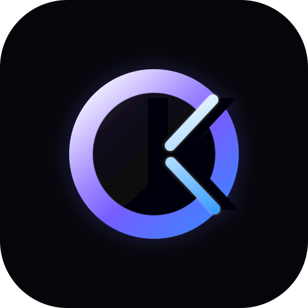

ORKEST OS - Signal Cut v4
Opção C com mais profundidade: anel com bisel, interior mais escuro, corte do K com luz embutida e sombra mais controlada.
Lockup premium
Símbolo com profundidade

Simulação na sidebar
Teste em fundo claro
A versão ainda preserva contraste e silhueta, mas o uso principal recomendado continua sendo em fundo escuro.